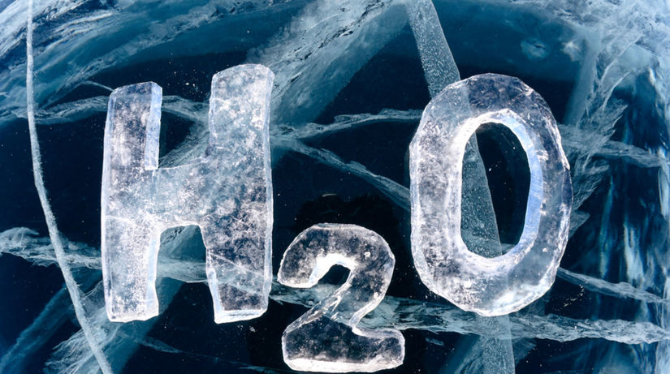
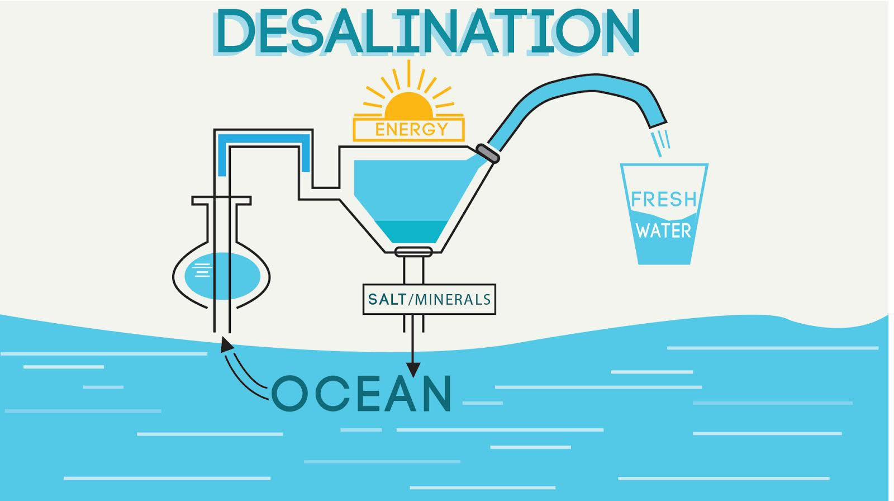

VODA
Voda alebo aqua (chemický vzorec H2O, podľa tradičného názvoslovia oxid vodný, novší systémový názov oxidán) je chemická zlúčenina vodíka a kyslíka. Je základnou podmienkou pre existenciu života na Zemi. Za normálnej teploty a tlaku je to bezfarebná, číra kvapalina bez zápachu a chuti. V prírode sa vyskytuje v troch skupenstvách: v pevnom (sneh, ľad), v kvapalnom (voda) a v plynnom (vodná para).
Je najrozšírenejšou látkou na povrchu Zeme. Je podstatnou zložkou biosféry a má popri pôde prvoradý význam pre zabezpečenie výživy ľudstva. Tvorí 70% ľudského tela a je nevyhnutná pre rastliny a živočíchy.
Štruktúra vody
Voda predstavuje chemickú zlúčeninu dvoch atómov vodíka (H) a jedného atómu kyslíka (O). Atómy v molekule vody sú viazané jednoduchou polárnou kovalentnou väzbou. Intermolekulové vodíkové mostíky sú príčinou napr. vysokej teploty varu vody 100 °C.
Voda sa v prírode vyskytuje v plynnom, kvapalnom a v tuhom skupenstve.
Pre svoj dipólový charakter je voda dobrým rozpúšťadlom iónových zlúčenín.
Voda v prírode
Voda sa v prírode voľne vyskytuje vo všetkých troch skupenstvách
Voda sa v podobe ľadu a snehu vyskytuje vo veľkých nadmorských výškach, pričom výška, v akej sa ľad so snehom prirodzene nachádza sa smerom k pólom postupne znižuje. Takmer celá plocha Antarktídy a Arktídy je väčšinu roka zaľadnená. Taktiež sa sneh a ľad vo veľkom množstve vyskytujú v miernom pásme v období zimy, kedy kvapalná voda samovoľne zamŕza a zrážky sú v podobe snehu.
V kvapalnom skupenstve sa na Zemi voda vyskytuje v najväčšom množstve. Bežne sa vyskytuje v podobe jazier, riek, potokov, oceánov a morí, nachádza sa v pôde aj v močiaroch. Väčšina vody sa nachádza v oceánoch v podobe slanej vody, pričom pokrýva 71% svetového povrchu.
Vodná para sa nachádza v atmosfére a jej zastúpenie sa pohybuje od 1 do 4 percent.
Získanie pitnej vody z morskej
Najjednoduchším odsoľovacím zariadením je destilačný prístroj, v ktorom sa vodné pary odvedú z varnej nádoby a skondenzujú v zbernej nádobe. Jednoduchý solárny destilačný mechanizmus možno zostrojiť v podobe sklenenej kupoly nad nádržou so slanou vodou. Voda sa vplyvom tepla slnečných lúčov zahrieva, odparuje, kondenzuje na skle kupoly, steká po ňom dole a zhromažďuje sa v zberných kanálikoch na okraji kupoly. Pri ploche 0,91 m² sa takto dá vyrobiť 4 – 5 litrov pitnej vody za deň.
Pri väčšom množstve vody sa zahrieva voda nad bod varu v tlakovej nádobe – neprechádza varom. Potom sa vypúšťa do oddelenej komory s nižším tlakom, kde sa jej časť vďaka rozdielu tlakov odparí a skondenzuje na rúrkach, ktorými sa do varnej nádoby privádza studená morská voda. Teplá slaná voda, ktorá sa neodparila v prvej komore, postupuje do druhej s ešte nižším tlakom. Tam sa časť z nej opäť odparí a skondenzuje.
Moderné destilačné systémy, vybudované na princípe reverznej osmózy, sú efektívnejšie. Používajú plastové membrány s drobnými dierkami, ktoré prepustia molekuly vody, ale zadržia väčšie molekuly soli. Výroba zariadení na premenu morskej vody na pitnú je veľmi nákladná.
Využitie človekom
Človek pre svoju dennú potrebu využíva pitnú vodu. Na pitnú vodu sa musí upravovať povrchová voda (vo vodárňach). Najskôr sa nechajú usadiť tuhé látky, potom sa do vody pridávajú chemické látky. Tieto s nečistotami tvoria zrazeninu, vznikajú vločky, ktoré sa usadzujú na dno. Takto upravená voda sa prefiltruje cez pieskový filter. Filter zachytí neusadené vločky a iné nečistoty. Nezachytí však napr. oleje, farby.